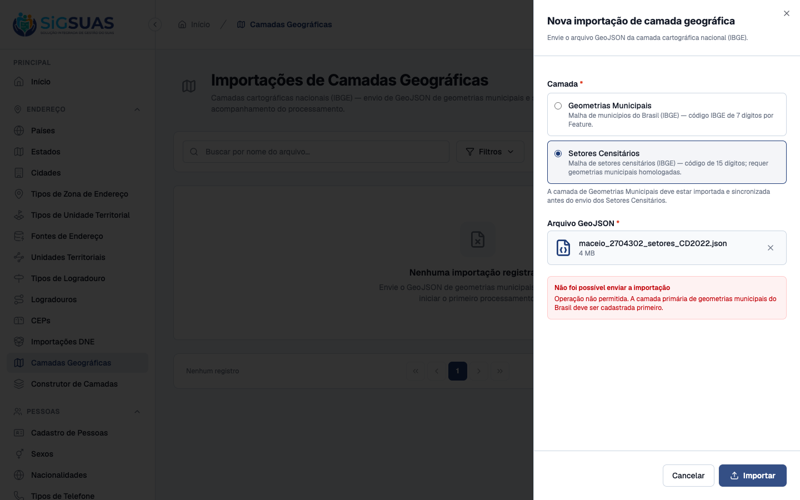
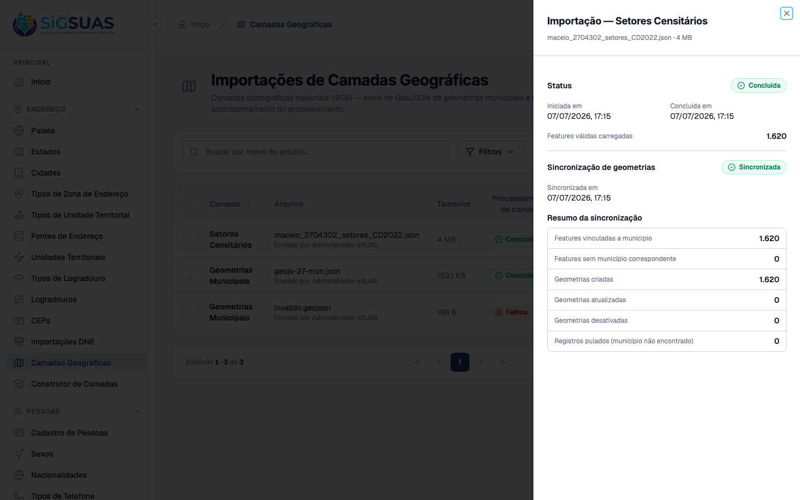
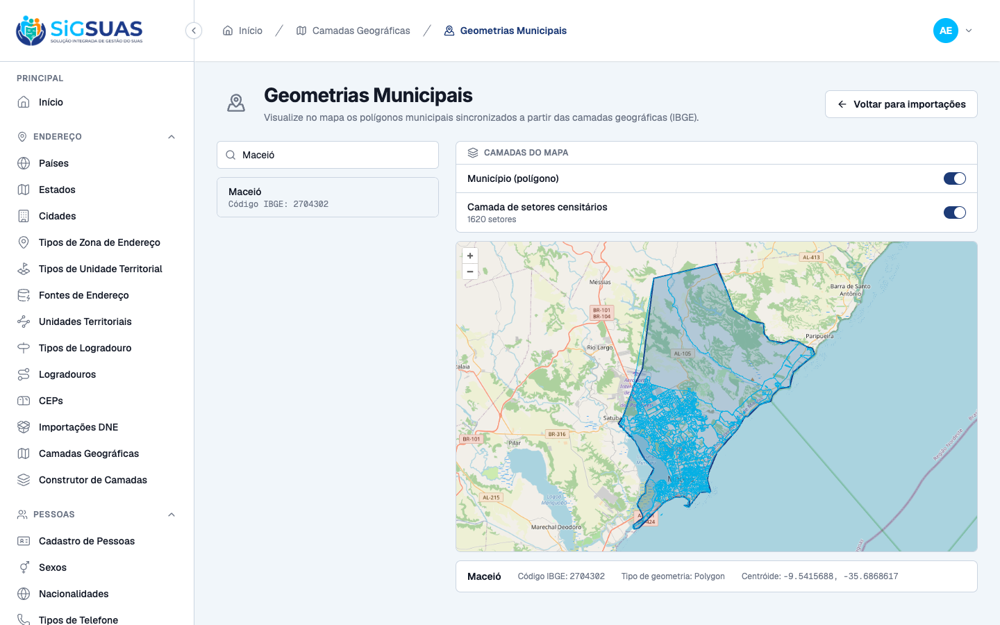
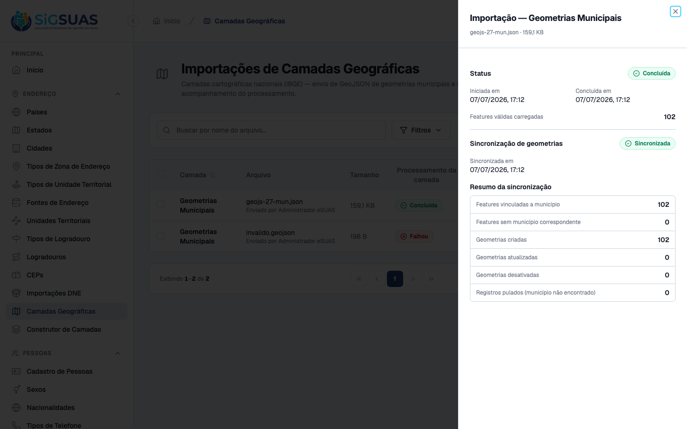
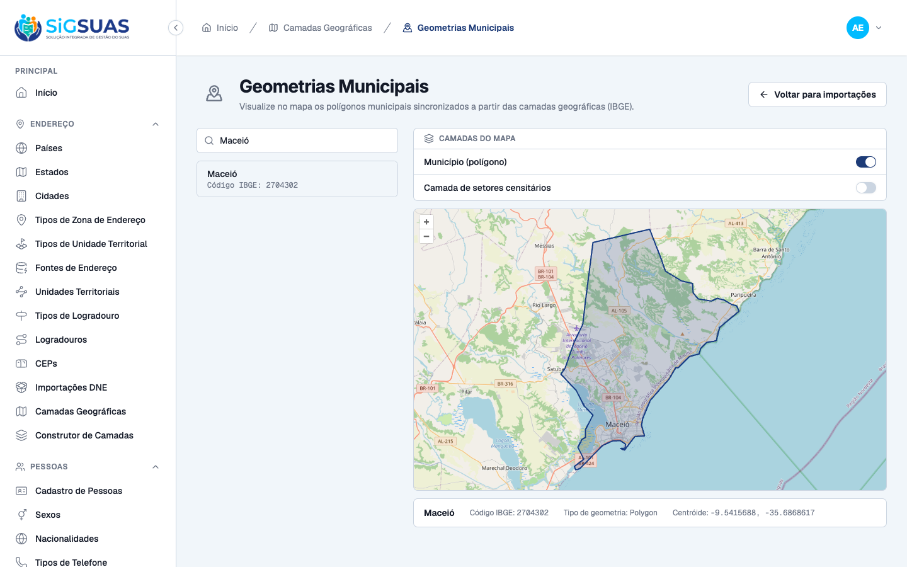
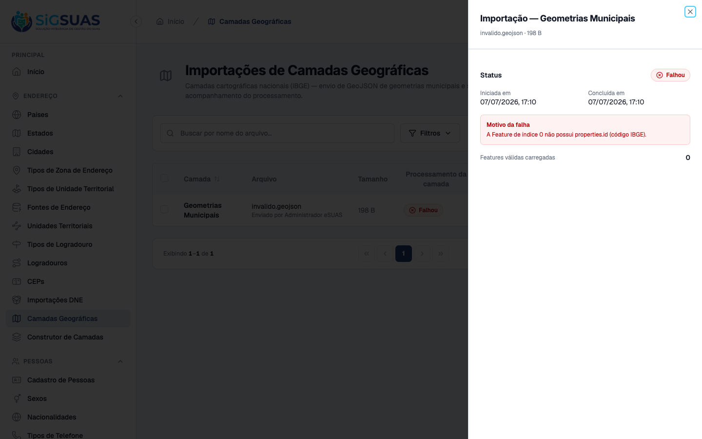

5 critérios de aceite (CA11, CA12, CA14, CA15, CA16) evidenciados dirigindo o frontend admin no navegador, do slate limpo à base nacional homologada. Fluxo real: bloqueio de setores sem base municipal (CA11) → rejeição de GeoJSON inválido (CA16) → importação e sincronização da geometria municipal de Alagoas, 102 municípios vinculados por código IBGE (CA14) → visualização do polígono de Maceió no mapa (CA15) → importação e sincronização dos 1620 setores censitários de Maceió, vinculados ao município e disponibilizados para consumo (CA12). 4 CAs com dupla evidência (UI + suíte Pest de 87 testes / 345 asserções, no anexo); CA15 por navegador.
| CA | Critério | Status |
|---|---|---|
| CA11 | Bloqueio de setores censitários sem base municipal homologada | ATENDIDO · navegador + automatizado |
| CA12 | Carga de setores censitários após base homologada, vinculados aos municípios | ATENDIDO · navegador + automatizado |
| CA14 | Importação da geometria municipal (GeoJSON) vinculada por código IBGE | ATENDIDO · navegador + automatizado |
| CA15 | Visualização da geometria municipal no mapa (validação visual) | ATENDIDO · navegador |
| CA16 | Rejeição de GeoJSON inválido com status de falha e mensagem explicativa | ATENDIDO · navegador + automatizado |
Critério (Gherkin): Dado que a base nacional de geometrias municipais ainda NÃO foi cadastrada e homologada, quando o Administrador tenta processar o arquivo de malha de setores censitários, então o sistema o impede de continuar e apresenta a mensagem “Operação não permitida. A camada primária de geometrias municipais do Brasil deve ser cadastrada primeiro.”
Como foi testado: Com o banco de camadas vazio (nenhuma geometria municipal homologada), abrir Nova importação, selecionar Setores Censitários, enviar maceio_2704302_setores_CD2022.json e clicar em Importar.

Critério (Gherkin): Dado que a base nacional de geometrias municipais está homologada (completed + synced), quando o Administrador importa o arquivo GeoJSON de setores censitários do IBGE e conclui o processamento global, então o sistema vincula as divisões geográficas aos respectivos municípios e disponibiliza as camadas para consumo na Área do Cliente.
Como foi testado: Com a base municipal homologada, importar maceio_2704302_setores_CD2022.json como Setores Censitários (GeoJSON); aguardar Concluída e acionar Sincronizar. Depois, no visualizador, ligar a Camada de setores censitários de Maceió.


Critério (Gherkin): Dado o Painel Global, quando o Administrador envia um arquivo GeoJSON com as geometrias dos municípios e o processamento conclui com sucesso, então as geometrias municipais válidas são registradas e vinculadas aos respectivos municípios por meio do código IBGE.
Como foi testado: Abrir Nova importação, selecionar Geometrias Municipais, enviar geojs-27-mun.json (102 municípios de Alagoas); aguardar Concluída e acionar Sincronizar.

Critério (Gherkin): Dado um município com geometria importada, quando o usuário abre a tela de visualização em mapa, então consegue consultar a representação geográfica do município e validar visualmente se a geometria foi carregada corretamente e corresponde ao município esperado.
Como foi testado: Acessar Visualizar geometrias, buscar e selecionar Maceió; o mapa desenha o polígono municipal com enquadramento automático.

Critério (Gherkin): Dado um arquivo GeoJSON inválido ou sem as informações necessárias, quando o Administrador tenta importá-lo, então a importação é rejeitada, o status indica falha, uma mensagem explicativa é apresentada e nenhuma geometria inválida é registrada.
Como foi testado: Importar invalido.geojson (FeatureCollection com Feature sem properties.id e geometria Point) como Geometrias Municipais e abrir os detalhes do lote.

PASS Tests\Unit\Services\Geo\GeoJsonValidationServiceTest ✓ it returns normalized features for a valid municipal feature collec… 0.31s ✓ it accepts a 15-digit code and MultiPolygon for the census sector l… 0.03s ✓ it reads the feature name case-insensitively (Name/NAME) with datas… 0.01s ✓ it reads the feature name case-insensitively (Name/NAME) with datas… 0.03s ✓ it reads the feature name case-insensitively (Name/NAME) with datas… 0.01s ✓ it reads the feature name case-insensitively (Name/NAME) with datas… 0.01s ✓ it strips the elevation (Z) from polygon coordinates 0.02s ✓ it drops KML residual properties (tessellate/extrude/visibility) ke… 0.02s ✓ it accepts a numeric properties.id normalizing it to string 0.02s ✓ it processes a large feature collection without loading the whole d… 0.04s ✓ it rejects content that is not valid json 0.02s ✓ it rejects a document whose type is not FeatureCollection 0.01s ✓ it rejects a feature collection without features with dataset "empt… 0.01s ✓ it rejects a feature collection without features with dataset "miss… 0.01s ✓ it rejects a feature collection without features with dataset "wron… 0.01s ✓ it rejects a feature without properties.id 0.03s ✓ it rejects an ibge code outside the digit pattern of the layer with… 0.01s ✓ it rejects an ibge code outside the digit pattern of the layer with… 0.01s ✓ it rejects an ibge code outside the digit pattern of the layer with… 0.01s ✓ it rejects an ibge code outside the digit pattern of the layer with… 0.01s ✓ it rejects a missing or unsupported geometry with dataset "missing… 0.01s ✓ it rejects a missing or unsupported geometry with dataset "null geo… 0.01s ✓ it rejects a missing or unsupported geometry with dataset "point ge… 0.01s ✓ it rejects a missing or unsupported geometry with dataset "linestri… 0.03s ✓ it rejects a missing or unsupported geometry with dataset "empty co… 0.01s PASS Tests\Feature\Api\GeoLayerImportControllerTest ✓ it lists geo layer imports 0.51s ✓ it filters geo layer imports by layer_type 0.03s ✓ it filters geo layer imports by status 0.03s ✓ it shows a geo layer import with creator 0.02s ✓ it stores a municipal geometry import and dispatches the job on the… 0.06s ✓ it validates required fields on store 0.02s ✓ it rejects an invalid layer_type 0.02s ✓ it rejects a non-geojson file 0.03s ✓ it rejects a new import while another is pending or processing 0.02s ✓ it blocks storing a census sector layer while the municipal geometr… 0.02s ✓ it blocks the census sector layer when the municipal geometry is co… 0.02s ✓ it accepts a census sector layer once the municipal geometry is hom… 0.03s ✓ it soft deletes a geo layer import while preserving its stored file 0.03s ✓ it blocks deleting a processing import 0.02s ✓ it requires authentication 0.02s ✓ it forbids access without permissions 0.03s ✓ it forbids destroy without the destroy permission 0.02s ✓ it lists only trashed imports with filter[trashed]=only 0.03s ✓ it bulk destroys imports in a single soft-delete call 0.03s ✓ it rejects the whole batch when an id is processing 0.03s ✓ it validates ids on bulk destroy 0.02s ✓ it restores a soft-deleted import resolving the trashed binding 0.02s ✓ it returns 422 when restoring an import that is not trashed 0.02s ✓ it force deletes a trashed import removing the record and its store… 0.03s ✓ it logs a single force_destroyed activity without a duplicate delet… 0.03s ✓ it retries a failed import requeueing the job with the stored geojs… 0.04s ✓ it returns 422 when retrying an import that is not failed 0.03s ✓ it returns 422 when retrying an import whose geojson is missing fro… 0.03s ✓ it queues the layer sync for a completed import on the geo queue 0.03s ✓ it returns 422 when syncing an import that is not completed 0.04s ✓ it returns 422 when the import is already queued or syncing with da… 0.02s ✓ it returns 422 when the import is already queued or syncing with da… 0.02s ✓ it returns 422 when another import is already queued or syncing wit… 0.03s ✓ it returns 422 when another import is already queued or syncing wit… 0.02s ✓ it forbids sync without the sync permission 0.02s ✓ it exposes the sync state in the resource 0.03s PASS Tests\Feature\Api\Manager\CensusSectorControllerTest ✓ it returns a FeatureCollection of the active sectors of the municip… 0.04s ✓ it returns an empty FeatureCollection (200) when the municipality h… 0.02s ✓ it does not leak sectors from other municipalities nor inactive sec… 0.02s ✓ it forbids access without the census-sectors.index permission 0.02s PASS Tests\Feature\Jobs\ProcessGeoLayerImportJobTest ✓ it processes a valid municipal geojson into staging features 0.02s ✓ it logs a processed activity with layer_type and feature_count 0.02s ✓ it replaces the staging on reprocess without duplicating features 0.02s ✓ it processes a census sector geojson with 15-digit codes into stagi… 0.02s ✓ it fails the import for structurally invalid geojson with dataset "… 0.02s ✓ it fails the import for structurally invalid geojson with dataset "… 0.02s ✓ it fails the import for structurally invalid geojson with dataset "… 0.02s ✓ it fails the import for structurally invalid geojson with dataset "… 0.02s ✓ it fails the import for structurally invalid geojson with dataset "… 0.02s ✓ it fails the import for structurally invalid geojson with dataset "… 0.02s ✓ it fails the import for structurally invalid geojson with dataset "… 0.02s ✓ it fails the import when the geojson file is missing from storage 0.02s PASS Tests\Feature\Jobs\SyncGeoLayerJobTest ✓ it syncs a municipal geometry import into city_geometries resolving… 0.03s ✓ it marks syncing at the start of the handle before running the pipe… 0.02s ✓ it logs a synced activity with the summary 0.02s ✓ it resyncs idempotently updating the present municipality while pre… 0.02s ✓ it keeps a previously imported city sectors active when syncing ano… 0.02s ✓ it syncs a census sector import distributing sectors to cities by t… 0.02s ✓ it resyncs census sectors idempotently without duplicating sectors… 0.02s ✓ it deactivates the paired census_sector_geometries row when its sec… 0.02s ✓ it marks the sync as failed recording the error message with datase… 0.02s ✓ it marks the sync as failed recording the error message with datase… 0.02s Tests: 87 passed (345 assertions) Duration: 3.43s